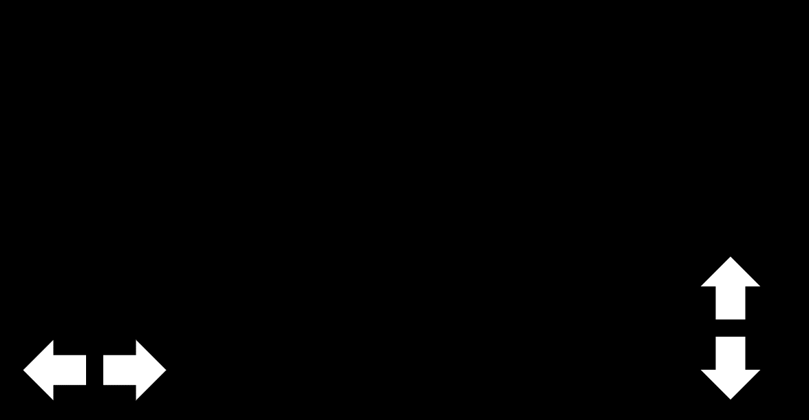
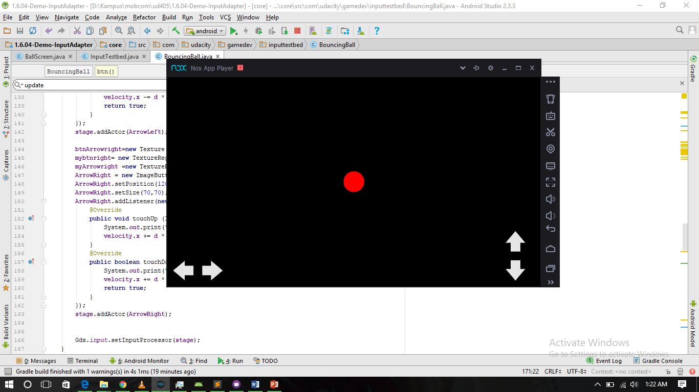

Mencoba Libgdx : Membuat Control On Screen

Mencoba membuat button/tombol yang digunakan untuk mengatur arah jalan charakter
Tujuan
Menciptakan buton yang dapat digunakan untuk mengatur gerakan caharakter. berikut desind awal
langkah
- membuat texture
- mengubah membuat textureregion dan texturregiondraweble
- membuat ImageButton dari texturregionDraweble
- menseting posisition button
- menambahkan addListener kepada button
- menambahkan button ke stage sebagai actor
- mengambar stage
kodingan
stage = new Stage(new ScreenViewport());
btnArrowup=new Texture("arrow.png");
mybtnup= new TextureRegion(btnArrowup);
myArrowup =new TextureRegionDrawable(mybtnup);
ArrowUp = new ImageButton(myArrowup);
ArrowUp.setPosition(ws-120,120);
ArrowUp.setSize(70,70);
ArrowUp.addListener(new InputListener(){
@Override
public void touchUp (InputEvent event, float x, float y, int pointer, int button) {
System.out.print("Press a Button");
velocity.y += d * ACCELERATION;
}
@Override
public boolean touchDown (InputEvent event, float x, float y, int pointer, int button) {
System.out.print("Pressed Text Button");
velocity.y += d * ACCELERATION;
return true;
}
});
stage.addActor(ArrowUp);
btnArrowdown=new Texture("arrow.png");
mybtndown= new TextureRegion(btnArrowdown);
mybtndown.flip(false,true);
myArrowdown =new TextureRegionDrawable(mybtndown);
ArrowDown = new ImageButton(myArrowdown);
ArrowDown.setPosition(ws-120,20);
ArrowDown.setSize(70,70);
ArrowDown.addListener(new InputListener(){
@Override
public void touchUp (InputEvent event, float x, float y, int pointer, int button) {
System.out.print("Press a Button");
velocity.y -= d * ACCELERATION;
}
@Override
public boolean touchDown (InputEvent event, float x, float y, int pointer, int button) {
System.out.print("Pressed Text Button");
velocity.y -= d * ACCELERATION;
return true;
}
});
stage.addActor(ArrowDown);
btnArrowleft=new Texture("arrow2.png");
mybtnleft= new TextureRegion(btnArrowleft);
mybtnleft.flip(true,false);
myArrowleft =new TextureRegionDrawable(mybtnleft);
ArrowLeft = new ImageButton(myArrowleft);
ArrowLeft.setPosition(20,20);
ArrowLeft.setSize(70,70);
ArrowLeft.addListener(new InputListener(){
@Override
public void touchUp (InputEvent event, float x, float y, int pointer, int button) {
System.out.print("Press a Button");
velocity.x -= d * ACCELERATION;
}
@Override
public boolean touchDown (InputEvent event, float x, float y, int pointer, int button) {
System.out.print("Pressed Text Button");
velocity.x -= d * ACCELERATION;
return true;
}
});
stage.addActor(ArrowLeft);
btnArrowright=new Texture("arrow2.png");
mybtnright= new TextureRegion(btnArrowleft);
myArrowright =new TextureRegionDrawable(mybtnright);
ArrowRight = new ImageButton(myArrowright);
ArrowRight.setPosition(120,20);
ArrowRight.setSize(70,70);
ArrowRight.addListener(new InputListener(){
@Override
public void touchUp (InputEvent event, float x, float y, int pointer, int button) {
System.out.print("Press a Button");
velocity.x += d * ACCELERATION;
}
@Override
public boolean touchDown (InputEvent event, float x, float y, int pointer, int button) {
System.out.print("Pressed Text Button");
velocity.x += d * ACCELERATION;
return true;
}
});
stage.addActor(ArrowRight);
Gdx.input.setInputProcessor(stage);
Hasil
Sampai tulisan ini dibuat button dapat di gambarkan di layar namun addlistener masih blm berfungsi
